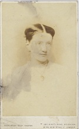

Margaret, or Maggie as she was known, was born at Garbity in the parish of Aberlour on 27 April 1834 to Ann Grant and Alexander Macpherson, a doctor in Aberlour.
In her teens Margaret attended school in Hampstead, north London, studying with Mary Ann Stodart, a writer and activist for women's education.
Born three months before the Emancipation Act came into effect, Margaret never visited the West Indies or owned a slave, yet a fortune made from the profits of slavery was to change her life dramatically at the tender age of twenty.
Margaret's uncle, Alexander Grant, had sailed as a young man to the West Indies, making his fortune there as a slave owner and merchant through his ownership of, and business interests in, a number of sugar and tobacco plantations in Jamaica. When Alexander died in 1854, Margaret adopted the surname Grant as a condition of her uncle's will. Alexander left his entire estate to his niece, who became an important benefactor in Aberlour.
Margaret died on 14 April1877, and the costs of completing the building were met by the estate of Charles Grant of Wester Elchies.
Rev. Canon Charles Jupp

Margaret Gordon Macpherson Grant
Rev. Canon Charles Jupp
(1830 – 1911)
The Reverend Canon Charles Jupp was ordained in 1868 and became Rector of St. Margaret's Church in Aberlour from 1874. He was warden and founder of an orphanage there in 1875, when he began a lifetime's work with destitute children. The first home was a small, four-roomed cottage on the banks of the Lour Burn for ‘four mitherless bairns’.
Canon Jupp was a fervent fund-raiser and became known as ‘The Beggar of the North’ for his activities, including door-to-door collections and sales of unwanted clothes. Within three years a new building was created which accommodated 30 children. Seven years on, the Aberlour Orphanage had room for 100 children and continued to grow despite the intervention of two World Wars.
Durante su adolescencia, Margaret asistió a la escuela en Hampstead, en el norte de Londres, donde estudió con Mary Ann Stodart, una escritora y activista por la educación de la mujer.
Nacida tres meses antes de la entrada en vigor de la Ley de Emancipación, Margaret nunca visitó las Indias Occidentales ni tuvo un esclavo, pero una fortuna de los beneficios de la esclavitud cambiaría radicalmente su vida a los veinte años.
Margaret murió el 14 de abril de 1877 y el patrimonio de Charles Grant de Wester Elchies cubrió los costos de completar el edificio.
Rev. Canon Charles Jupp
Margaret Gordon Macpherson Grant
Rev. Canon Charles Jupp
(1830 – 1911)
El reverendo canónigo Charles Jupp fue ordenado sacerdote en 1868 y se convirtió en rector de la iglesia de Santa Margarita desde 1874. Fue director y fundador de un orfanato allí en 1875, cuando comenzó el trabajo de su vida con niños desfavorecidos. El primer hogar era una pequeña casa de campo de cuatro habitaciones a orillas del Lour Burn para «cuatro niños sin madre».
Canon Jupp era un ávido recaudador de fondos y se hizo conocido como «El mendigo del norte» por sus actividades, que incluían campañas de puerta en puerta y la venta de ropa no deseada. En tres años, se creó un nuevo edificio para albergar a 30 jóvenes. Siete años más tarde, el orfanato Aberlour tenía espacio para 100 niños y siguió creciendo a pesar de la intervención de dos guerras mundiales.
Margaret Gordon Macpherson Grant
(1834 – 1877)
Margaret oder Maggie, wie sie genannt wurde, wurde am 27. April 1834 in Garbity in der Gemeinde Aberlour als Tochter von Ann Grant und Alexander Macpherson, einem Arzt in Aberlour, geboren.
Während ihrer Teenagerjahre besuchte Margaret die Schule in Hampstead, Nord-London, wo sie bei Mary Ann Stodart, einer Autorin und Aktivistin für die Bildung von Frauen, studierte.
Margaret wurde drei Monate vor Inkrafttreten des Emanzipationsgesetzes geboren und besuchte nie die Westindischen Inseln oder besaß einen Sklaven, aber ein Vermögen aus den Gewinnen der Sklaverei würde ihr Leben im Alter von zwanzig Jahren radikal verändern.
Margarets Onkel, Alexander Grant, war in seiner Jugend nach Westindien gesegelt und hatte dort als Sklavenhalter und -händler ein Vermögen durch seinen Besitz und seine Geschäftsinteressen an einer Reihe von Zucker- und Tabakplantagen in Jamaika gemacht. Als Alexander 1854 starb, nahm Margaret den Nachnamen Grant als Bedingung für den Willen ihres Onkels an. Alexandre vermacht seinen gesamten Nachlass seiner Nichte, die zu einer wichtigen Wohltäterin in Aberlour wird.
Margaret starb am 14. April 1877 und die Kosten für die Fertigstellung des Gebäudes wurden durch den Nachlass von Charles Grant aus Wester Elchies gedeckt.
Rev. Canon Charles Jupp
Margaret Gordon Macpherson Grant
Rev. Canon Charles Jupp
(1830 – 1911)
Reverend Canon Charles Jupp wurde 1868 zum Priester geweiht und ab 1874 Rektor der Kirche Sankt Margrethen. Er war Direktor und Gründer eines dortigen Waisenhauses im Jahr 1875, als er mit benachteiligten Kindern das Werk seines Lebens begann. Das erste Heim war ein kleines Häuschen mit vier Zimmern am Ufer des Lour Burn für „vier mutterlose Kinder“.
Canon Jupp war ein begeisterter Spendensammler und wurde wegen seiner Aktivitäten, darunter Haus-zu-Haus-Fahrten und der Verkauf unerwünschter Kleidung, als "Der Bettler des Nordens" bekannt. Innerhalb von drei Jahren wurde ein Neubau für 30 junge Menschen geschaffen. Sieben Jahre später hatte das Aberlour Waisenhaus Platz für 100 Kinder und wuchs trotz der Intervention zweier Weltkriege weiter.